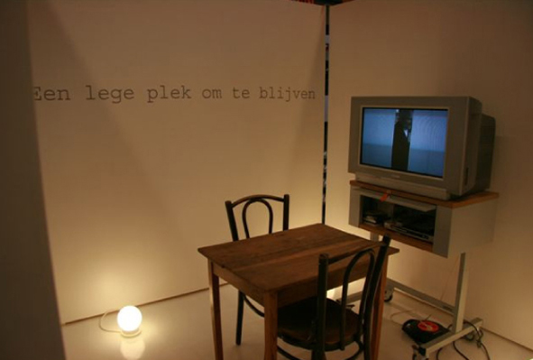
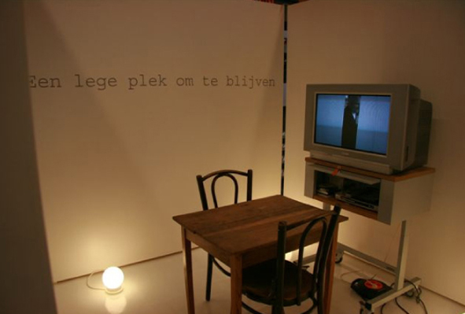

Project in opdracht van het CBK 's-Hertogenbosch i.s.m. de bibliotheek. Interactief project dat van vorm veranderde. Biebbezoekers lazen voor, lieten muziek horen waar ik opnames van maaktde die te horen waren vanuit de holle wanden van de witte kubusvormige ruimte. Vier Biebbezoekers heb ik gefotografeerd en fysiek onderdeel gemaakt van het werk. Hieronder kan je het geluidswerk horen dat ik maakte van de verschillende opnames van wat de biebbezoekers me lieten horen. Tijdens de opening van de kubus en van het project heeft contrabassist Hein van der Gijn over het geluidswerk heen geïmproviseerd, terwijl op film Rutger Kopland zijn gedicht voordroeg waarop het project is gebaseerd.
)
 

De witte kubus werd gedurende het project binnenstebuiten gekeerd. De titel is afkomstig van een gedicht van Rutger Kopland die ik in Groningen heb opgezocht en heb gefilmd toen hij het gedicht voordroeg.